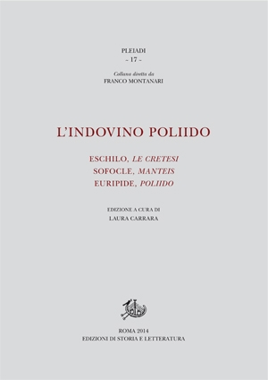
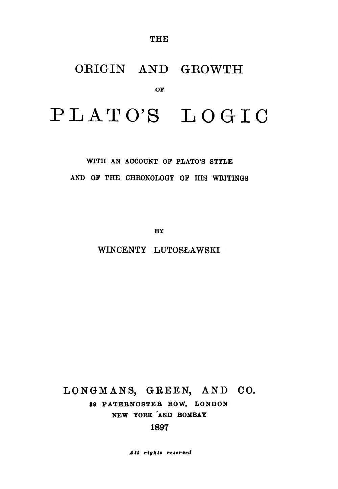

46:24 · 9 OPERE
La meravigliosa battaglia. Appunti sul Gorgia di Platone.
Il filo del discorso
Il relatore propone il Gorgia di Platone come lettura sul rapporto fra persuasione, verità e giustizia. Dopo una presentazione del sofista e delle tesi attribuitegli, segue il passaggio fra Gorgia, Polo e Callicle, interpretandolo come un progressivo confronto con la retorica e con una politica della forza. Al centro pone la disponibilità socratica a essere confutato, la distinzione fra assenso e pressione dei molti e la tesi che commettere ingiustizia danneggi più di subirla.
Leggi la sintesi completaRiduci la sintesi
Il racconto di Archelao, il medico di fronte ai bambini, i recipienti da riempire e il mito finale del giudizio delle anime mostrano come il dialogo intrecci argomento, ironia e immagine. Il commento richiama inoltre Luciano e un saggio di Lutosławski sulla logica platonica. La conclusione collega temperanza e responsabilità morale alla critica della cultura contemporanea. Le analogie politiche sono del relatore; la scheda distingue il testo antico dalle attribuzioni imprecise e dalle interpretazioni storiche non dimostrate.
I libri nel discorso

Gorgia
Note sul riferimento
Copertina: Gorgia, Bompiani, giugno 2001, a cura di Giovanni Reale, testo greco a fronte, 384 pagine, ISBN 9788845291111. Copertina ufficiale blu, bianca e verde acqua con titolo e autore; edizione di riferimento non identificata nel video.
Immagine autentica dell’opera, controllata visivamente; l’edizione di riferimento non è attribuita al filmato.
Titolo e Platone espliciti: opera centrale, letta e commentata con riferimenti Stephanus.

Sul non essere o sulla natura
Identificazione probabile
Note sul riferimento
Copertina della raccolta I Presocratici: Copertina della raccolta I Presocratici, Diels–Kranz, a cura di Giovanni Reale, Bompiani, 2006, testi originali a fronte, ISBN 9788845257407. Il trattato è noto indirettamente, fra l’altro da Sesto Empirico e dal testo pseudoaristotelico Su Melisso, Senofane e Gorgia; DK 82 B 3. L’immagine appartiene alla raccolta, non a un inesistente volume autonomo qui verificato.
Copertina autentica della raccolta contenente testimonianze e frammenti. Non è una copertina autonoma del trattato perduto e non viene attribuita alla edizione usata nel video.
Esposizione delle tre tesi del sofista, riscontro con la testimonianza di Sesto Empirico; titolo del trattato non pronunciato e collegamento probabile.

Encomio di Elena
Note sul riferimento
Copertina: La Vita Felice, Piccola Biblioteca della Felicità 29, 2021, a cura di Riccardo Pezzano, testo greco a fronte, 64 pagine.
Immagine autentica dell’opera, controllata visivamente; l’edizione di riferimento non è attribuita al filmato.
Titolo e Gorgia espliciti, distinti dal dialogo di Platone.

Dialoghi dei morti
Note sul riferimento
Copertina: Aurora Boreale · 2024 · introduzione di Nicola Bizzi
Immagine autentica dell’opera, controllata visivamente; l’edizione di riferimento non è attribuita al filmato.
Luciano di Samosata e i Dialoghi dei morti, con Elena e le sue ceneri: titolo deformato dalla trascrizione automatica ma riferimento riconoscibile.

Poliido — frammento 638
Identificazione probabile
Note sul riferimento
Frontespizio della raccolta L’indovino Poliido: Immagine editoriale della raccolta L’indovino Poliido. Eschilo, Le Cretesi; Sofocle, Manteis; Euripide, Poliido, a cura di Laura Carrara, Edizioni di Storia e Letteratura, Pleiadi 17, 2014, XXIV–504 pagine secondo il catalogo, ISBN 9788863726688. La raccolta e il suo frontespizio sono distinti dal singolo frammento euripideo; nessuna copia attribuita al video.
Immagine autentica diffusa dall’editore, con i tre drammi, la curatrice, Roma 2014 e la collana. Si dichiara il frontespizio della raccolta, non una copertina autonoma della tragedia perduta. La correzione Eschilo/Euripide è redazionale.
Versi su vivere e morire dal Gorgia 492e, attribuiti oralmente a Eschilo ma riscontrati come Euripide, Poliido fr. 638; titolo non pronunciato.

The Origin and Growth of Plato’s Logic. With an Account of Plato’s Style and of the Chronology of His Writings
Note sul riferimento
Frontespizio del 1897, riprodotto nella ristampa 1983: Longmans, Green, and Co., London, New York and Bombay, 1897, 547 pagine oltre ai preliminari. Immagine del frontespizio originale del 1897 riprodotto nella ristampa anastatica Georg Olms, Hildesheim–Zürich–New York, 1983, ISBN 3487073366. La scheda digitale riporta 1897, ma il frontespizio della ristampa dichiara 1983: le due date sono distinte.
Frontespizio originale a leaf 9 della scansione DLI, titolo, autore, editore e 1897 leggibili; leaf 5 documenta la ristampa Olms 1983. Non è una copertina esterna e non identifica la copia mostrata dal relatore.
Lutosławski, titolo tradotto e 1897 espliciti; l’immagine di riferimento distingue originale e ristampa.

Menone
Note sul riferimento
Copertina: Bompiani · Testi a fronte · 2000
Copertina autentica dell’edizione di riferimento, controllata visivamente. Non identifica l’esemplare letto o citato nel video.
Il Menone è nominato come confronto sulla partecipazione del lettore.

La Repubblica
Note sul riferimento
Copertina: Laterza · La Repubblica · edizione con testo a fronte di riferimento
Immagine associata all’ISBN di riferimento e controllata visivamente; edizione e traduzione non identificate come quelle citate o lette nel video.
Repubblica e Trasimaco espliciti, confrontati con Callicle senza identificarli come la stessa persona.

La consolazione della filosofia
Identificazione probabile
Note sul riferimento
Copertina: Bompiani, 2019
Boezio, male e discussione già svolta sul canale: collegamento probabile alla Consolazione, soprattutto libro IV; titolo non pronunciato.